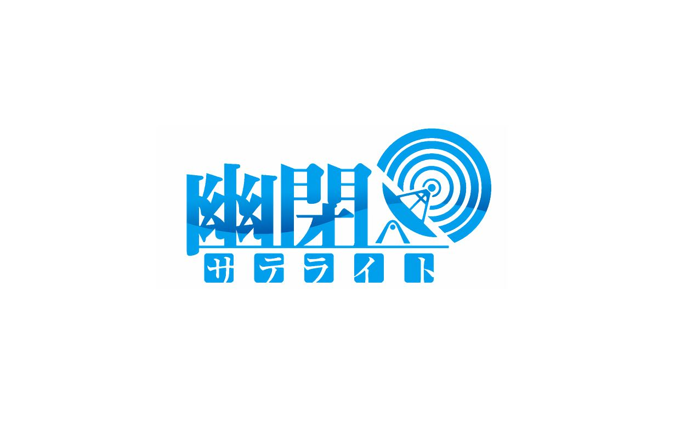
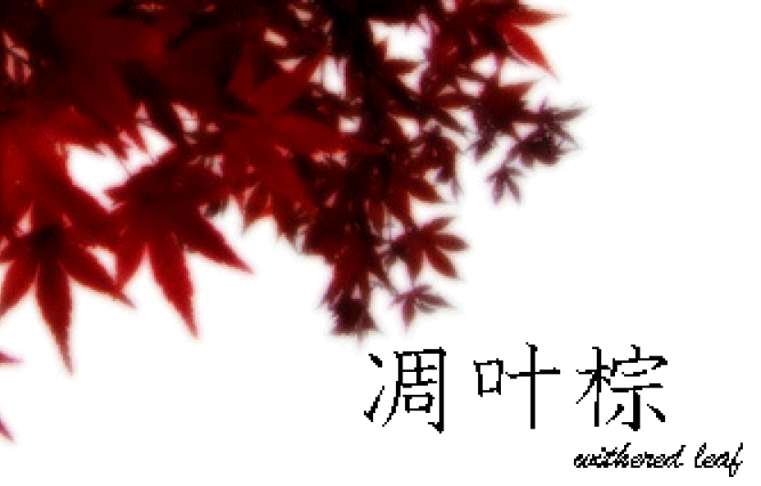

☯ - TouHou Doujin Music - ☯
HOME
首頁
STORY
故事
CHARACTER
角色
DOUJIN-MUSIC
同人音樂
◈
◈
幽閉星光 - 幽閉サテライト

幽閉星光成立於2009年11月13日，次年8月14日參加C78並發布了第一部作品《感情ケミストリー》，之後活躍至今，創作出了不少名曲，如《花開艷麗終散落》、《閒雲遮月 清風襲花》、《華鳥風月》、《泡沫，悲哀的桃源》等。 前主唱senya為EXIT TUNES旗下歌手，在ACG界非常有名。 與滿福神社、少女フラクタル等多個社團合作。
曉Records-Akatsuki Records
曉Records成立於2012年，同年8月11日參加了C82並發布了第一部作品《ENDLESS FANTASY》，之後活躍至今。曉Records是一個有著獨特曲風的同人音樂社團，作詞、編曲和演唱者都各有特點，中毒性極強。 Stack是曉Records的主唱，聲線多變而獨特。另外曉Records也經常邀請一些知名唱見進行客串。
凋叶棕 - ティアオイエツォン

凋葉棕成立於2007年，是社團RD-Sounds在東方界使用的名義，同年12月31日參加C73並發布了第一部作品《祭》（與同人社團TimeScope合作），之後活躍至今。 凋葉棕的專輯名稱基本上都是單字，每個字都具有其獨特的含義。震撼東方眾心靈深處的歌詞為其一大特點。曲風涉獵極其廣泛——House、Jazz、Rock、Pop、J-Trance……無不上手。因理解和考察多少都需要一些必要的東方相關知識，所以某種意義上來說是真正的上級向。部分作品被東方眾認為是「黑化曲」的典範，也因此備受好評。
FELT
2010年首次於博麗神社例大祭SP1亮相發布了第一部作品《Milky Wink》。以発熱巫女～ず編曲者NAGI☆、Maurits＂禪＂Cornelis兩人為中心的東方同人樂團，與発熱巫女～ず成員有許多重疊。在 NAGI☆主催之下，曲風變得更加多變，樂曲明快的速度感、抒情曲的豐富感有更多面的詮釋。之後活躍至2022年1月1日解散。曾與＜echo＞PROJECT等社團合作。
")
")
")
")